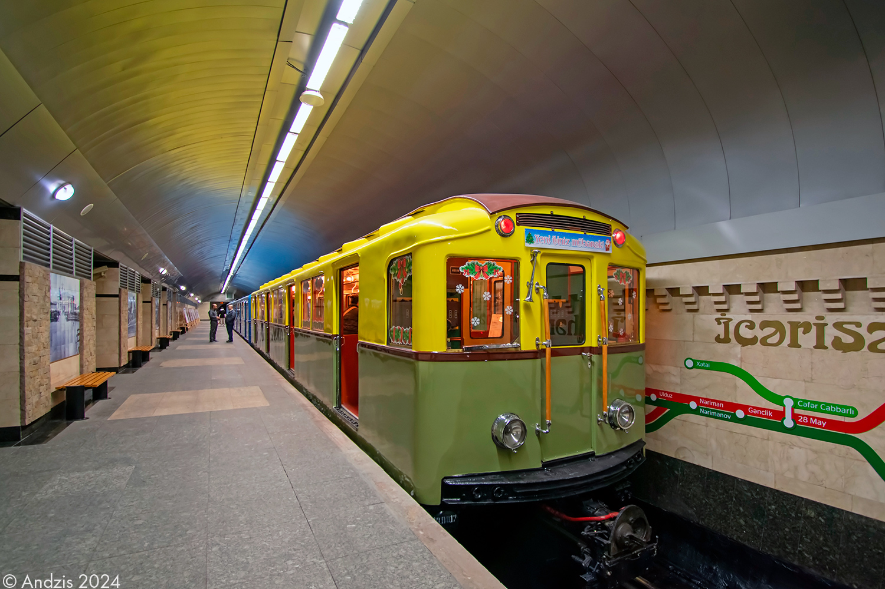

Вагон типа А
Вагон типа А — первый подвижной состав Московского метрополитена. Именно эти вагоны открыли движение 15 мая 1935 года на первой линии от «Сокольников» до «Парка культуры». Проектирование велось под руководством инженера П. И. Травина в Центральном вагоностроительном бюро.
Вагоны типа А выпускались с 1934 по 1937 год на Мытищинском вагоностроительном заводе. Всего построено 112 вагонов: 56 моторных и 56 прицепных. Каждый вагон имел кабину машиниста, из двух вагонов формировалась секция.
Производство
| Параметр | Значение |
|---|---|
| Главный конструктор | Травин П. И. |
| Годы постройки | 1934—1937 |
| Страна постройки | СССР 🇷🇺 |
| Завод | Мытищинский вагоностроительный |
| Вагонов построено | 112 (56 моторных и 56 прицепных) |
| Нумерация | 1—56 (моторные), 1001—1056 (прицепные) |
Важно: Проектирование было поручено Центральному вагоностроительному бюро Всесоюзного объединения вагоностроительных и тормозных заводов. Электрическое оборудование проектировал и изготавливал завод «Динамо», кузова и тележки — Мытищинский вагоностроительный завод.
Технические характеристики
| Параметр | Значение |
|---|---|
| Род тока и напряжение | 750 В постоянного тока |
| Типы вагонов | Мг / Пг (моторный головной / прицепной головной) |
| Число вагонов в составе | 6 |
| Полная вместимость | 262 человека |
| Сидячих мест | 52 |
| Длина вагона | 18 916 мм |
| Ширина | 2 700 мм |
| Высота | 3 700 мм |
| Диаметр колёс | 900 мм |
| Ширина колеи | 1 524 мм |
| Масса тары | 51,7 т (моторный) / 36 т (прицепной) |
| Материал вагона | Сталь |
| Выходная мощность | 4 × 153 кВт (моторный) / — (прицепной) |
| Тип ТЭД | ДМП-151 |
| Макс. скорость | 65 км/ч |
| Ускорение при пуске | 0,65—0,7 м/с² |
| Ускорение при торможении | 0,65—0,7 м/с² |
| Тормозная система | Тормоз Вестингауза |
Особенность: Токоприёмники ТР-1А с нижним токосъёмом устанавливались на тележках моторных и прицепных вагонов по одному с каждой стороны. Все четыре токоприёмника были электрически соединены между собой — в зависимости от расположения контактного рельса работали токоприёмники с одной или другой стороны вагона.
История эксплуатации
Постройка первой секции
Изготовлена первая двухвагонная секция: моторный вагон № 1 и прицепной № 1001.
Открытие Московского метрополитена
Вагоны типа А начали регулярную пассажирскую эксплуатацию на первой линии от «Сокольников» до «Парка культуры». Поступили в депо «Северное».
Расширение эксплуатации
Вагоны поступили в депо «Сокол» и «Измайлово» для обслуживания Горьковско-Замоскворецкой и Арбатско-Покровской линий. Секции сцеплялись в четырёхвагонные, позже — в шестивагонные поезда.
Передача в Измайлово
С Кировско-Фрунзенской и Горьковско-Замоскворецкой линий вагоны переданы в депо «Измайлово».
Конец пассажирской эксплуатации
На Арбатско-Покровской линии поезда типа А эксплуатировались с пассажирами до конца января 1975 года.
Служебная эксплуатация
Два вагона (№ 21 и № 1031) использовались как дефектоскопы до 1999 года. Вагон № 1031 был дефектоскопом, вагон № 21 — его проявочной лабораторией.
Вагон № 21 — памятник
Вагон № 21 продан московскому байкерскому бару «Ночной поезд» около станции Угрешская, установлен как памятник.
Капитально-восстановительный ремонт
Вагоны № 1 и № 1031 прошли КВР в электродепо «Выхино». Выставлены на станции «Партизанская» в рамках выставки ретровагонов, посвящённой 80-летию метрополитена.
Возврат вагона № 21
Московский метрополитен выкупил вагон № 21 у байкерского клуба «Ночной поезд». Доставлен в депо «Выхино» для КВР.
Музейный состав 1-1031-21
Вагон № 21 восстановлен до ходового состояния, передан в депо «Измайлово» и вцеплен в музейный состав 1-1031-21.
Праздничные рейсы
Поезд совершал одиночные пассажирские рейсы по Сокольнической линии 15 мая в честь дня открытия метрополитена.
Исторические расцветки
За свою долгую историю состав имел три различные расцветки:
Голубо-синяя
Одна из первых окрасок вагонов типа А.
Жёлтый и охра
Тёплая цветовая гамма, использовавшаяся в послевоенный период.
Желто-зеленый
Оригинальная расцветка некоторых вагонов типа А.
Сохранившиеся вагоны
До наших дней сохранилось несколько вагонов типа А. Один из них — в Москве, другой — в Баку.
Опытный состав
Самый первый состав Московского метро, построенный в 1934 году. Состав был расформирован.
- Первый поезд метро СССР
- Вагоны сохранены
- Два вагона в двух странах
Вагон № 1001 (Баку)
Прицепной вагон из первой секции. В 1954 году отправлен в Баку. В ноябре 2017 года Бакинский метрополитен восстановил его изначальный облик.
- Местонахождение: Бакинский метрополитен
- Был дефектоскопом
- Включён в ретросостав
Ретросостав в Москве
Ретросостав включает в себя вагоны 1-1031-21
- Сохранен для истории
- Приписан к ТЧ-3 "Измайлово"
- Принимает участие на ночных экскурсиях
Судьба остальных вагонов: Остальные вагоны типа А в полноценном виде не сохранились — были порезаны или проданы в качестве сараев. Точное местонахождение большинства из них неизвестно.
Фотогалерея

📸 pfandrom

📸 Анатолий Тягун(transphoto)

📸 Игорь Черных.(transphoto)

📸 Климова Валентина Ивановна

📸 Александр Шанин(transphoto)

📸 andzis(transphoto)
Нажмите на фото для увеличения
«Вагоны типа А — это не просто первый подвижной состав Московского метро. Это символ начала целой эпохи, живая история, которая начиналась с двух вагонов — моторного № 1 и прицепного № 1001».